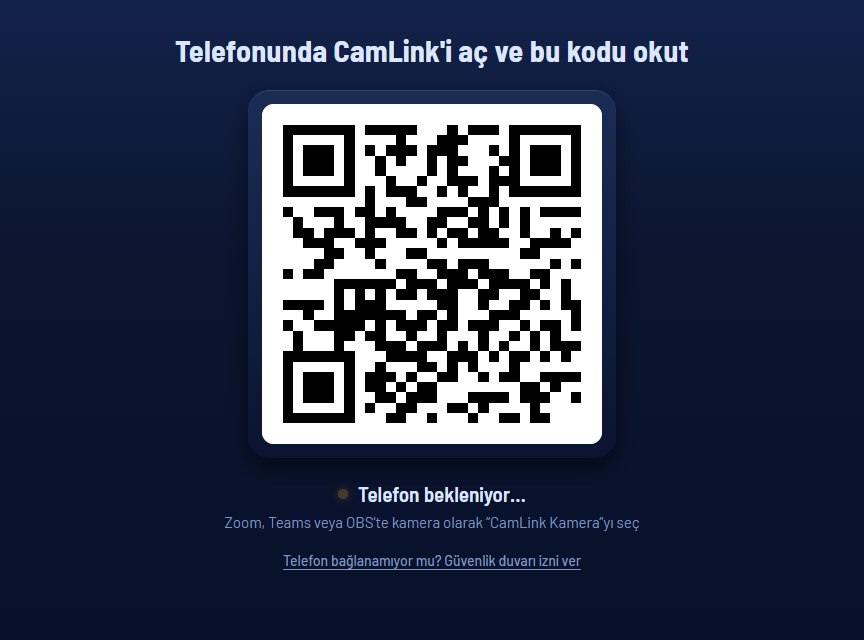

Telefonunu Windows'ta web kamerası olarak kullan.
CamLink, Android telefonunu Windows'ta “CamLink Kamera” adlı bir web kamerasına çevirir. Bilgisayara Windows uygulamasını, telefona CamLink.apk'yı kur. Sonra ekrandaki QR kodu telefonla okut.
Windows 11 ve Android 8 veya üstü gerekir.

Neler yapar
- USB ile bağlanırKablo takılıysa görüntü kablodan gelir. Bunun için telefonda USB hata ayıklama açık olmalı.
- Wi‑Fi ile de bağlanırKablo yoksa aynı Wi‑Fi ağı üzerinden bağlanır. Hangisinin kullanılacağını uygulama seçer.
- QR'ı bir kez okutSonraki açılışlarda telefon kendiliğinden bağlanır.
- 1080p, saniyede 30 kareGörüntü Full HD çözünürlükte gelir.
- 360p'den 4K'ya modlarWindows'ta 360p ile 4K arasında modlar var. Telefonun desteklediği en yüksek kalite kendiliğinden seçilir.
- Uygulamalarda kamera olarak görünürZoom, Teams, OBS ve tarayıcılar gibi kamera seçebilen Windows uygulamalarında “CamLink Kamera” adıyla listelenir.
Üç adımda kurulum
-
Windows uygulamasını kur
CamLink-win-Setup.exe dosyasını indir ve çalıştır. Kamera sürücüsü kurulu değilse pencerede Kur düğmesi çıkar. Bu düğme bir kez yönetici izni ister.
-
Telefona APK'yı yükle
CamLink.apk dosyasını telefona indir ve aç. Android sorarsa “bilinmeyen kaynaklardan yükleme” iznini ver.
-
QR'ı okut
Telefonda CamLink'i aç ve bilgisayardaki büyük QR kodu okut. Sonraki açılışlarda telefon kendiliğinden bağlanır. “CamLink Kamera” yalnız Windows uygulaması açıkken görünür.
Gereksinimler
- Windows 11CamLink Kamera Windows 11 ister (derleme 22000 veya üstü).
- Android 8 veya üstüKamerası olan bir Android telefon ve CamLink.apk.
Sık sorulanlar
Windows “bilgisayarınızı korudu” diyor
Kurulum dosyası dijital olarak imzalı olmadığı için Windows bu uyarıyı (SmartScreen) gösterir. Şunu yap:
- “Windows bilgisayarınızı korudu” penceresinde Ek bilgi'ye tıkla.
- Yine de çalıştır'a tıkla.
Telefon APK'yı yüklemiyor
APK Play Store dışından geldiği için Android “bilinmeyen kaynaklardan yükleme” iznini ister. Bu izni, dosyayı açtığın tarayıcıya ya da dosya yöneticisine ver. Sonra yüklemeyi yeniden başlat.
Yönetici izni neden isteniyor?
Kamera sürücüsünü penceredeki Kur düğmesi kurar. Bunun için yönetici izni gerekir. İzin yalnız bir kez sorulur.
“CamLink Kamera” listede görünmüyor
Kamera yalnız Windows uygulaması açıkken görünür. CamLink'i aç, sonra kullandığın uygulamada kamerayı yeniden seç.
Mikrofonum Windows'a gelsin istiyorum
Telefonun mikrofonunu Windows'ta kullanmak için VB-Cable gerekir. VB-Cable CamLink'le birlikte gelmez, ayrıca kurman gerekir.
Güncellemeler nasıl geliyor?
Uygulama kendini günceller. Yeni sürüm çıkınca elle bir şey indirmen gerekmez.
Nasıl kaldırırım?
- Windows: Ayarlar › Uygulamalar › Yüklü uygulamalar bölümünden CamLink'i kaldır.
- Telefon: CamLink'i her uygulama gibi kaldır.
Kaldırınca kamera sürücüsü ve güvenlik duvarı kuralları geride kalabilir. Bunları da silmek istersen komut istemini yönetici olarak aç ve şu komutları çalıştır:
regsvr32 /u /s "C:\Program Files\CamLink\camlink-vcam.dll"
netsh advfirewall firewall delete rule name="CamLink (TCP)"
netsh advfirewall firewall delete rule name="CamLink (UDP)"
Ardından C:\Program Files\CamLink klasörünü sil.